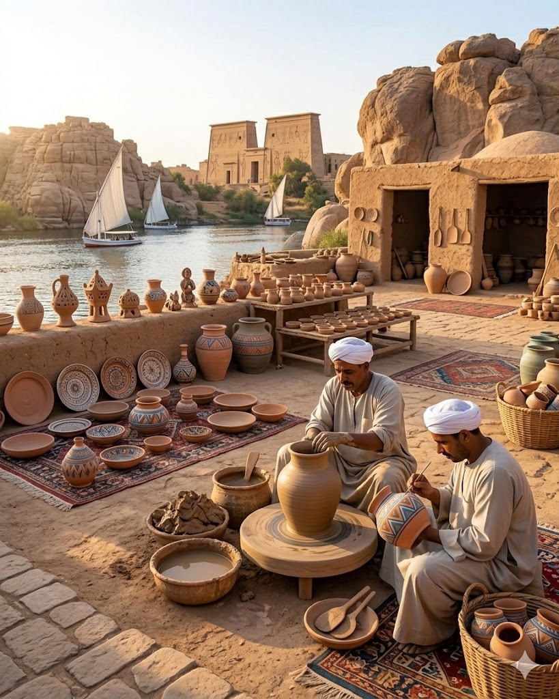
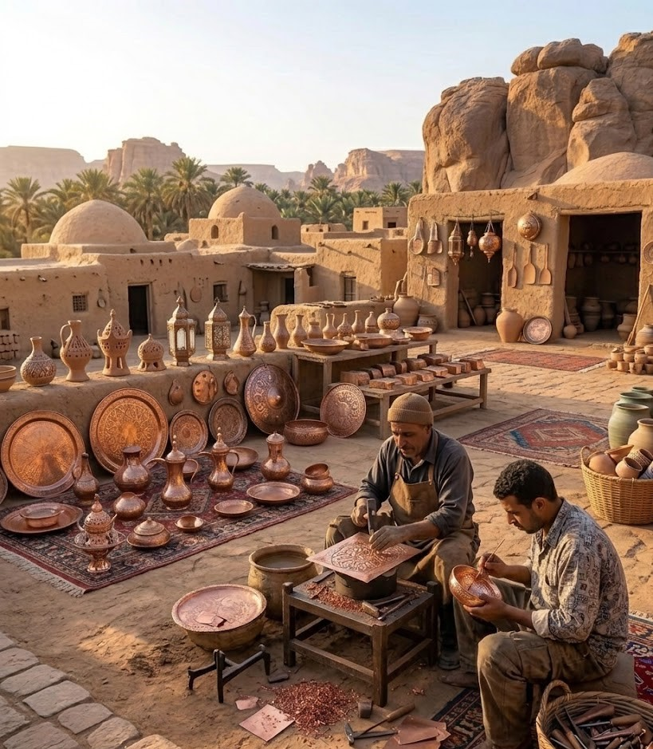
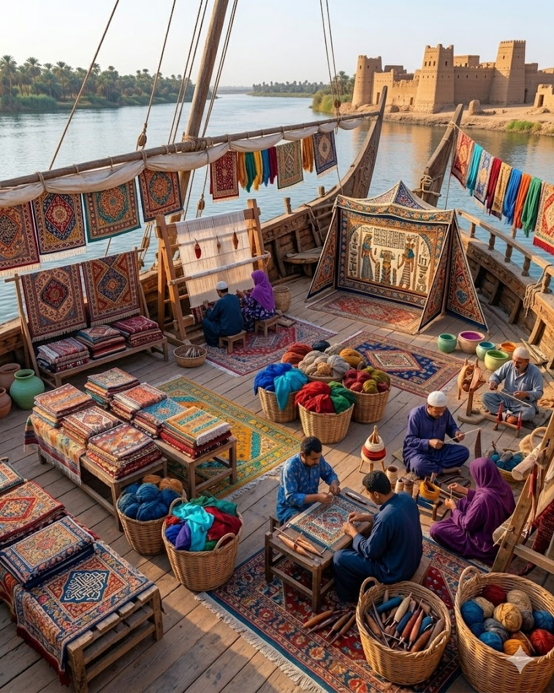

اكتشف الحرف المصرية
حرف صنعت الحضارة وما زالت تحكي قصتنا

الفخار
من الطين تصنع الحياة

النحاس
حرفة تتوارثها الأجيال

النسيج اليدوي
خيوط من الفن والتراث

الخيامية
ألوان تحكي الهوية
الأرابيسك
زخارف من روح مصر
رحلة داخل الحرف المصرية القديمة والمناطق التي تحفظ ذاكرة التاريخ
فنون وثقافات
أماكن تحكي التاريخ
قصص من الماضي
هوية واحدة.. شعب واحد
حرف صنعت الحضارة وما زالت تحكي قصتنا

من الطين تصنع الحياة

حرفة تتوارثها الأجيال
خيوط من الفن والتراث

ألوان تحكي الهوية
زخارف من روح مصر
من زمان أوي الفراعنة كانوا يحتفلوا بالربيع. بالـنانو و كانوا بسموه "شموش" يعني عيد الحياة
اقرأ القصةشواهد حية على عظمة الماضي الممتد (اضغط على أي مدينة لاستكشافها)